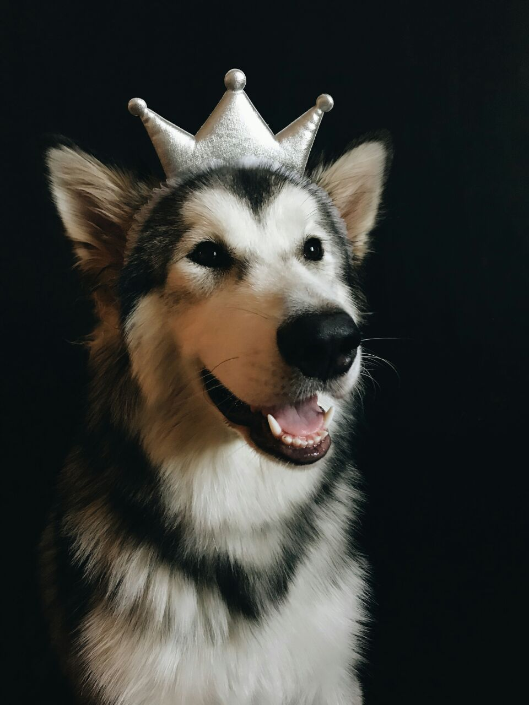
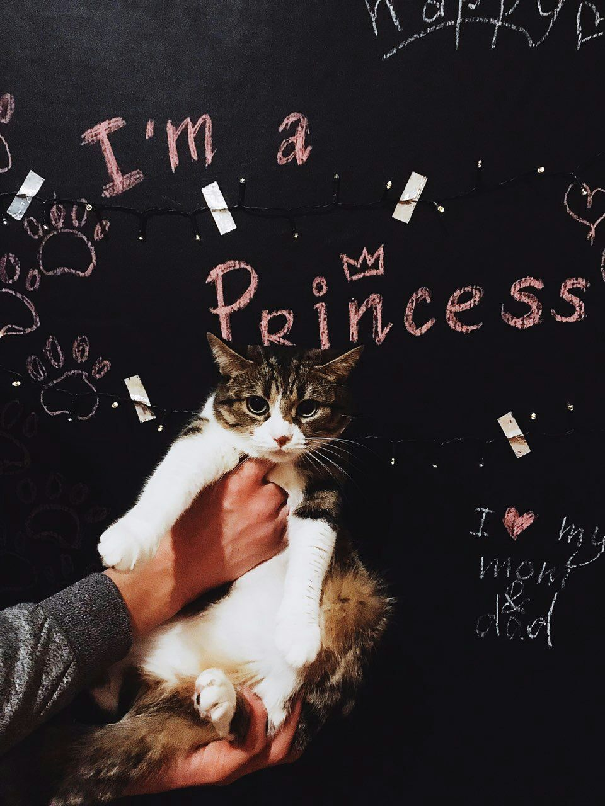
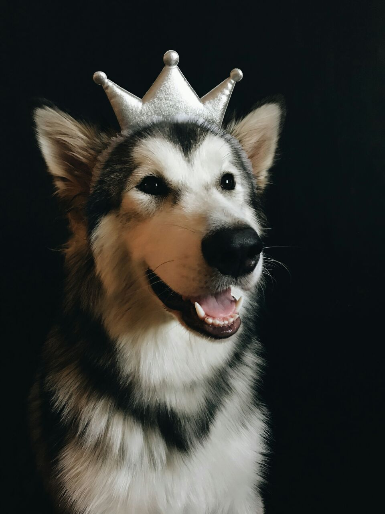
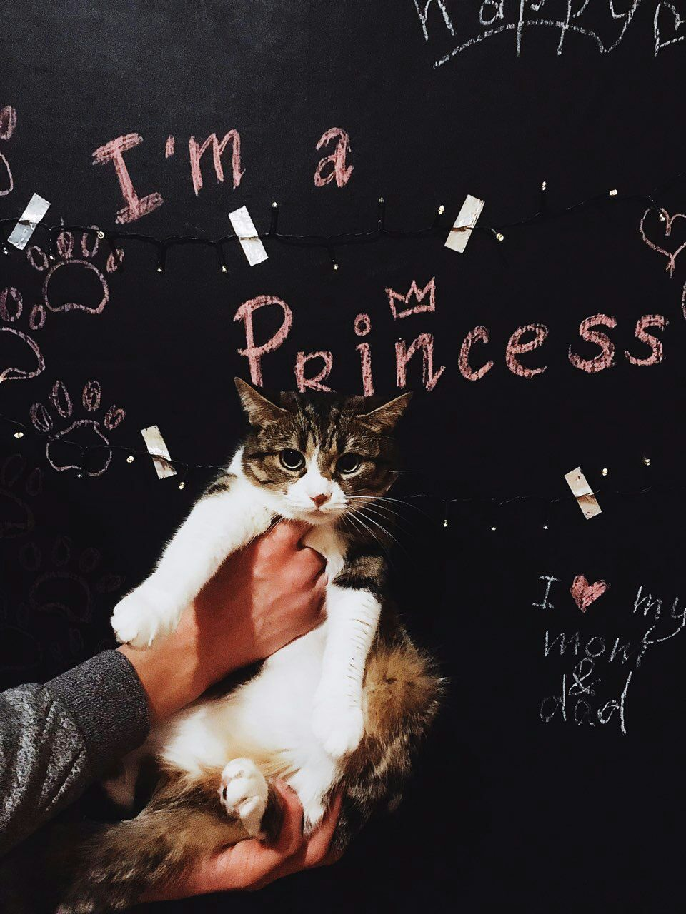

About Myself
I'm Katy and I'm 24 y.o. I'm from Poltava, but I've been living in Kyiv for several years.

I have two beaty and cute pets. Alpha  and Milka
and Milka 
 
I'm Katy and I'm 24 y.o. I'm from Poltava, but I've been living in Kyiv for several years.
I have two beaty and cute pets. Alpha  and Milka
and Milka 
 
I fell in love with mountains
I was only in the Carpathians twice,
but I will never forget that.
The first time I was in the spring,
but the snow was still full
and it was very cold.
I went up to the observatory
on a mountain called Pip Ivan.
The second time I was on a long
trip, and also climbed Goverla,
as the largest mountain in Ukraine
and Petros.
In the summer, I like to look
at the sky through a telescope,
because there are many stars,
bright and very clear for viewing.
Cosmic space is very interesting
and exciting, therefore I also like
to watch films related to it.
Oh, I hope when we will fly
to the other planet
I'm a member of the Kiev Women's
Ultimate Team "Dyki Krali"
Ultimate - is a non-contact team sport
played with a flying disc .
People of different ages play.
There are men's teams, women's
and mixed teams.
| Nova | Dyki Krali |
| Gigolo | Gamble |
I love plants, especially I love potted flowers. Also interested in the topic of ecology,
which is becoming increasingly relevant and popular.
It’s just a dream that people become
more careful about the planet and protect its resources.